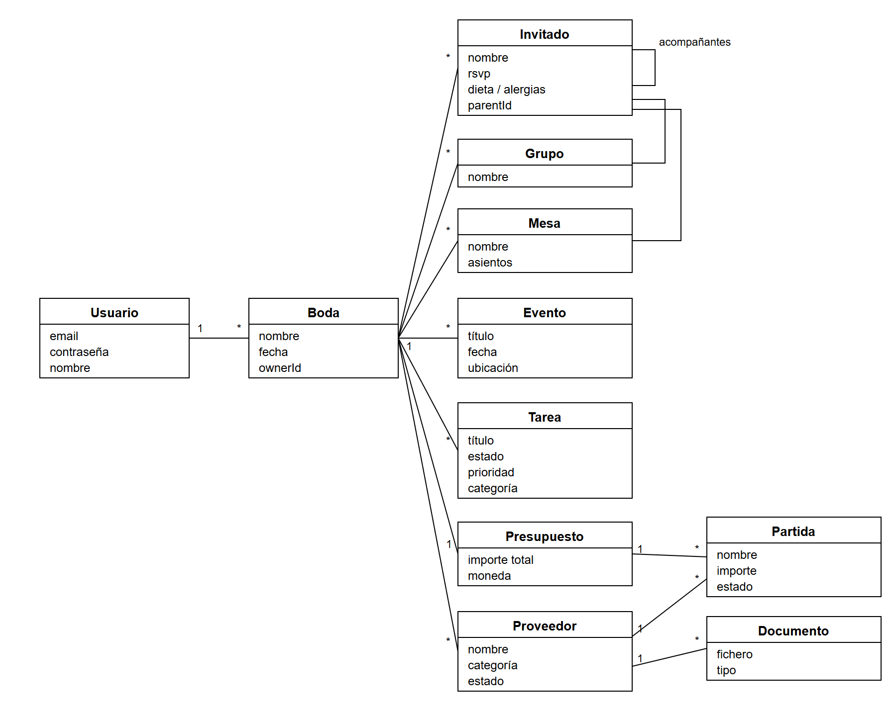
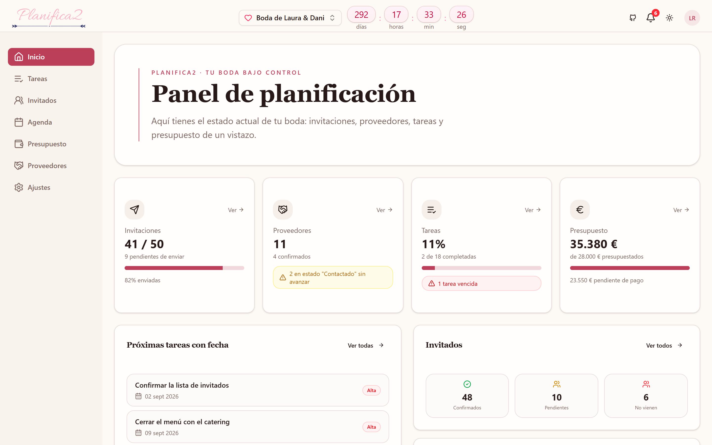
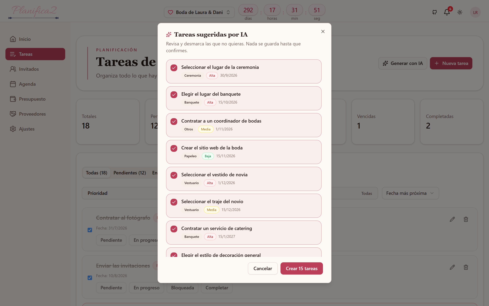

Y todo esto hay que controlarlo a la vez:
| Bodas.net | The Knot | Zola | Este proyecto | |
|---|---|---|---|---|
| Organización (invitados, mesas, presupuesto) | Sí | Sí | Sí | Sí |
| Modelo de negocio | Marketplace | Marketplace | Marketplace | Autocontenido |
| IA aplicada a… | Limitada | Recomendar proveedores | Redactar textos | Decisiones organizativas |
Desarrollar una aplicación que organice todos los aspectos de una boda desde un único panel, con asistencias de IA que automaticen las decisiones más repetitivas.
Cubrir en una sola herramienta todo el ciclo: cuenta y bodas, invitados y confirmaciones, grupos y mesas, tareas y agenda, presupuesto y proveedores, y un panel de seguimiento.
Automatizar las decisiones organizativas más repetitivas mediante propuestas que el usuario revisa y confirma.
Construirla atendiendo a la seguridad, la usabilidad, la robustez frente a errores y la calidad del código.
→ Inteligencia artificial
→ Envío de correo
| Tecnología | Qué es | Por qué la elegí |
|---|---|---|
| React | Biblioteca para construir la interfaz con piezas reutilizables. | Modelo sencillo y el ecosistema más amplio: encontré bibliotecas maduras de calendario y gráficas. |
| TypeScript | JavaScript al que se le añaden tipos de datos. | Avisa de los errores mientras escribo el código, no cuando ya está en producción. |
| Vite | Herramienta que compila y sirve la aplicación mientras se desarrolla. | Arranca y refresca los cambios casi al instante, frente a los segundos de las herramientas clásicas. |
| Tailwind CSS | Sistema de estilos mediante clases ya definidas. | Da coherencia visual sin escribir hojas de estilo a medida para cada pantalla. |
| shadcn/ui | Colección de componentes accesibles que se copian dentro del proyecto. | Se pueden adaptar libremente, sin depender de una biblioteca externa con estética propia. |
Cada petición del cliente recorre siempre el mismo camino:
/api/invitados| Tecnología | Qué es | Por qué la elegí |
|---|---|---|
| Node.js | Permite ejecutar JavaScript en el servidor. | Mismo lenguaje en cliente y servidor: menos cambio de contexto al desarrollar sola. |
| Express | Estructura mínima para crear las rutas de la API. | Maduro y simple; alternativas como NestJS imponen mucha estructura innecesaria aquí. |
| Zod | Define qué forma deben tener los datos que entran. | Con una sola definición valida los datos y genera los tipos: no se pueden desincronizar. |
El modelo se declara una sola vez en un fichero. A partir de él genera automáticamente el código de acceso y las migraciones: cada cambio de la base de datos queda registrado y es repetible.
Si me equivoco en el nombre de un campo, falla al compilar, no delante del usuario. Y las garantías —que un asiento no se repita, que al borrar una boda no queden restos— las impone PostgreSQL, no mi código.

// Única función que habla con la IA (solo en el servidor) await openai.chat.completions.create({ model: "gpt-4o-mini", temperature: 0.4, // baja: respuestas consistentes messages: [ { role: "system", content: reglas }, { role: "user", content: contextoDeLaBoda }, ], response_format: { type: "json_schema", … }, });
Qué se envía: fecha, número de invitados, nombres y grupos. Qué no: correos, teléfonos ni contraseñas.
Si hay servidor configurado, envía de verdad; si no, usa una cuenta de pruebas que devuelve un enlace de vista previa.
Cada servicio externo vive en un único fichero. Cambiar de proveedor no obliga a tocar el resto, y un fallo suyo no tumba la aplicación.
Al iniciar sesión se entregan dos credenciales distintas:
Dura minutos. Viaja en cada petición. Si alguien lo robara, caduca enseguida.
Dura días y se guarda en la base de datos, así que se puede anular: eso es cerrar sesión de verdad.
| Medida | Qué consigue |
|---|---|
| Doble comprobación de dueño | Aunque cambies el identificador en la dirección, no puedes ver la boda de otra persona. |
| Responder «no encontrado» | Si respondiera «prohibido», estaría confirmando que esa boda existe. Diciendo «no encontrado» no revelo nada. |
| Contraseñas cifradas | Se guardan transformadas y no se pueden recuperar, ni siquiera desde la base de datos. |
| Arranque seguro | Si las claves del servidor no son seguras, el servidor no arranca. Mejor eso que arrancar mal. |
Se exige a la IA una respuesta con una forma cerrada y se comprueba antes de usarla. Si no encaja, no se utiliza.
La IA nunca escribe en la base de datos. Devuelve borradores que se guardan solo si la pareja los confirma.
Contrato = acuerdo cerrado sobre la forma exacta que debe tener la respuesta. Se impone y luego se verifica.
// 1) Se le exige al modelo que responda con esa forma exacta response_format: { type: "json_schema", json_schema: { …, strict: true } } // 2) Se comprueba la respuesta antes de dársela al usuario const resultado = esquema.safeParse(respuesta); if (!resultado.success) throw { status: 502, message: "Formato no esperado" };
Los identificadores de mesas e invitados se generan en cada boda, así que no se pueden fijar por adelantado: el modelo de lenguaje podría inventarse referencias que no existen.


Entorno: servidor Node.js contra una base de datos PostgreSQL en contenedor · pruebas con Vitest y supertest · 64 invitados de prueba.
| Tipo de prueba | Qué comprueba | Resultado |
|---|---|---|
| Unitarias | Cifrado de contraseñas, credenciales de sesión, plantilla del correo y tratamiento de errores. | Superadas |
| Integración | Recorrido completo registro → boda → invitado, con peticiones reales contra la base de datos. | Superadas |
| Aislamiento | Acceder a una boda ajena devuelve «no encontrado», sin revelar que existe. | Superada |
| Estilo y compilación | Análisis de estilo y compilación de cliente y servidor. | Sin errores |
| Integración continua | Todo lo anterior se ejecuta solo con cada cambio del proyecto. | En verde |
¿Alguna pregunta?